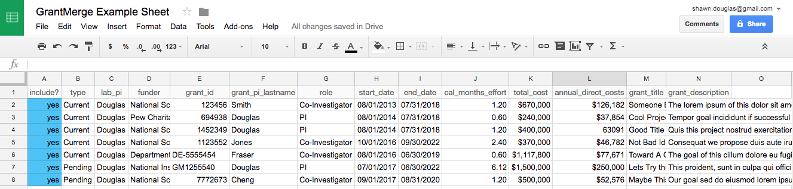
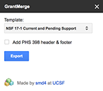

Blog Posts
{% for post in site.posts %}
- {{ post.date | date_to_string }} » {{ post.title }}
{% endfor %}
Installation
- Install the GrantMerge via this link.
How to use
- Create a new Google Spreadsheet.
- Populate the column headings and data for your grants. Here is an example spreadsheet to get started.

- In the Add-ons menu, select "GrantMerge > Export data" to launch the sidebar.
- Choose a template and click Export.

- Download links will appear upon completion, and a new google doc will appear in your account.
Create your own template
- Create a new Google Doc with "Template" in the name so it will show up as an export option.
- Populate the template with variables that will be substituted for each row. Template variables should be identical to the column names surrounded by a leading and trailing
% character. For example, the column heading funder_name would correspond to a template variable %funder_name%
- Feel free to use these NSF or NIH templates as a starting point to create your own.